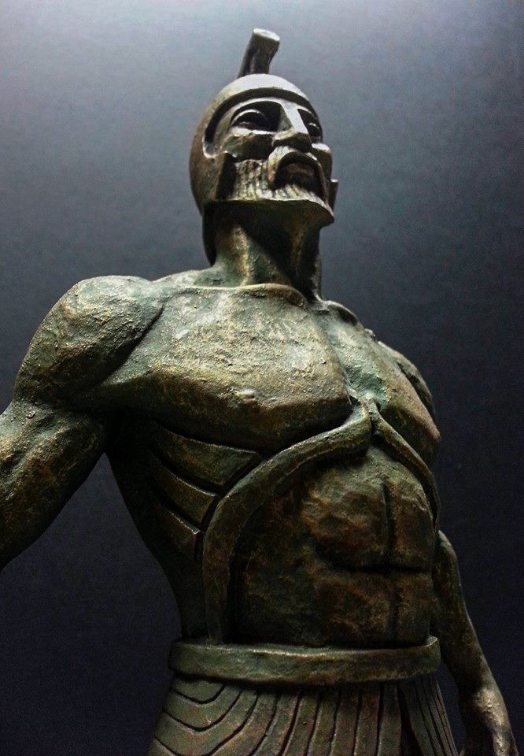

Історія розвитку робототехніки починається з давніх давен, переплітаючись з історією розвитку науки і техніки, основними принципами прогресу людства. Технології, що використовувались в обчислювальній техніці, електроенергетиці, пневматиці, гідравліці можуть вважатися частиною історії робототехніки, яка є одним з найбільших досягнень людства, розвиток якого продовжується і на даний момент. Перші посилання на появу античних роботизованих механізмів датуються епохою Стародавньої Греції та розквіту Римської імперії. Наприклад, чи знали ви, що міфічний Талос з острова Крит, який ретельно описується в літописах грецької історії та стародавніх літературних творах, був ледь не першою згадкою про роботів античних часів . За одним розповсюдженим варіантом міфу про Талоса міфічну істоту створив Гефест в Сардинії за наказом самого Зевса, що вирішив послати цей «подарунок» критському королю Міносу. Згадуючи іншу легенду, Талоса направив на острів Крит Зевс для того, щоб він був охоронцем і оберегом острова, а також стежив і зберігав мир у Європі.
У 1901 між тим самим островом Критом і Кейтерою водолазами було знайдено залишки інакшого роботизованого дива античності - першого механізованого комп'ютера! Цей пристрійпращур являв собою складне поєднання передач, що наближено розраховували положення сонця, зірок, місяця та інших небесних тіл. Цей «комп’ютер» є зразком найунікальніших та найстаріших механізмів Давньої Греції, має назву «Пристрій Антикера». Ще трохи пізніше, приблизно у 80-х роках ІІІ століття до н. е. відомий грецький інженер того часу Ктесибій розробив водяний годинник з рухомими фігурами. Конcтрукція того годинника була доволі простою. Годинник мав резервуар з водою та невеликий отвір внизу пристрою, через який вода витікала протягом 24 годин, а сам він був розділений на три функціональні підрозділи. Приблизно в 287–212 р.р. до нашої ери передовими розробками того часу займався відомий нам античний вчений Архимед, грек за національністю, який хоча й не розроблював роботизовані пристрої, але, не подкладаючи рук, трудився над розробкою деталей механічних систем, які давали йому можливість просуватися вперед в галузі математики. Близько 10-70 р.р. до нашої Одометр Герона Олександрійського Огляд розвитку робототехніки.
1996 рік став особливим для розвитку роботизованих пристроїв. Саме цього року Девід Баретт створив RoboTuna для вивчення плавання риб і інших морських істот, а компанія Honda створила робот P2, який став першим саморегульованим, двоногим гуманоїдним роботом.З еволюцією людства змінювалися напрямки в галузі роботизованих пристроїв. Так, у 1997 році вчені розробили суперкомп'ютер IBM, одержав перемогу над багатократним чемпіоном з шахів Гарі Каспаровим. Той випадок – перший у світі раз, коли машина перемогла шахового чемпіона світу. Доктор Сінтія з 1998 року почав розробку схеми соціальних роботів. Він створив потужного робота Kismet, який взаємодіяв з людьми, тобто був прообразом сучасного соціального робота. Сам робот нагадує нам чудернацьке створіння, яке нібито зійшло з казкових сторінок. Того ж 1998 року усім відома корпорація «The Lego Group» випустила в продаж нову лінійку дитячих роботів MINDSTORMS, що ідеально підійшла на роль «ескізної» системи для робототехнічних винаходів, завдяки поданій модульній конструкції та пластиковій цеглі (основі створюваних роботів).
Наступного року розробки соціальних роботів збільшили свій обсяг. Компанія Sony випустила першу робототехнічну собаку Aibo, а компанія Mitsubishi створила робота-рибу. Намір компанії полягав у створенні роботизованої версії вимерлих видів риб. Також цього року активно поширилися впровадження побутових роботів, найяскравіший з котрих - це перший персональний робот для побуту, що отримав назву «Cye». Ця модель роботів застосовувалися у виконанні різних повсякденних завдань, наприклад: доставка пошти, підмітання і вологе прибирання підлоги, перенесення брудного посуду і т. д. Все це було створено компанією Probotics Inc і стало трендом двадцять першого століття. Компанія Sony в 2000 році на презентації Robodex оприлюднила Sony Robots Dream (SDR). Ці іноваційні пристрої змогли повністю перевернути світогляд робототехніки: SDR наділили штучним інтелектом і системою аналізу, завдяки якій робот отримав можливість розпізнавати десятки різних облич, передавати власні емоції мовою тіла або розмовою, а також ходити по різних типах поверхонь: рівній і нерівній.
| Промислові роботи | Побутові роботи | Соціальні роботи | Медичні роботи | Дослідницькі роботи | Бойові роботи |
|---|---|---|---|---|---|
| ливарні | транспортні | члени родини | діагности | космічні | БПЛА |
| складальні | розумний будинок | тварини | фармацевти | наземні | сухопутні |
| фарбувальні | помічник | іграшки | хірурги | підземні | морські |
| будівельні | домогосподарка | доглядальніци | морські | ||
| транспортні | трансплантанти | ||||
| фасувально-сортувальні | протези | ||||
| сільськогосподарські | |||||
| для механічної обробки |